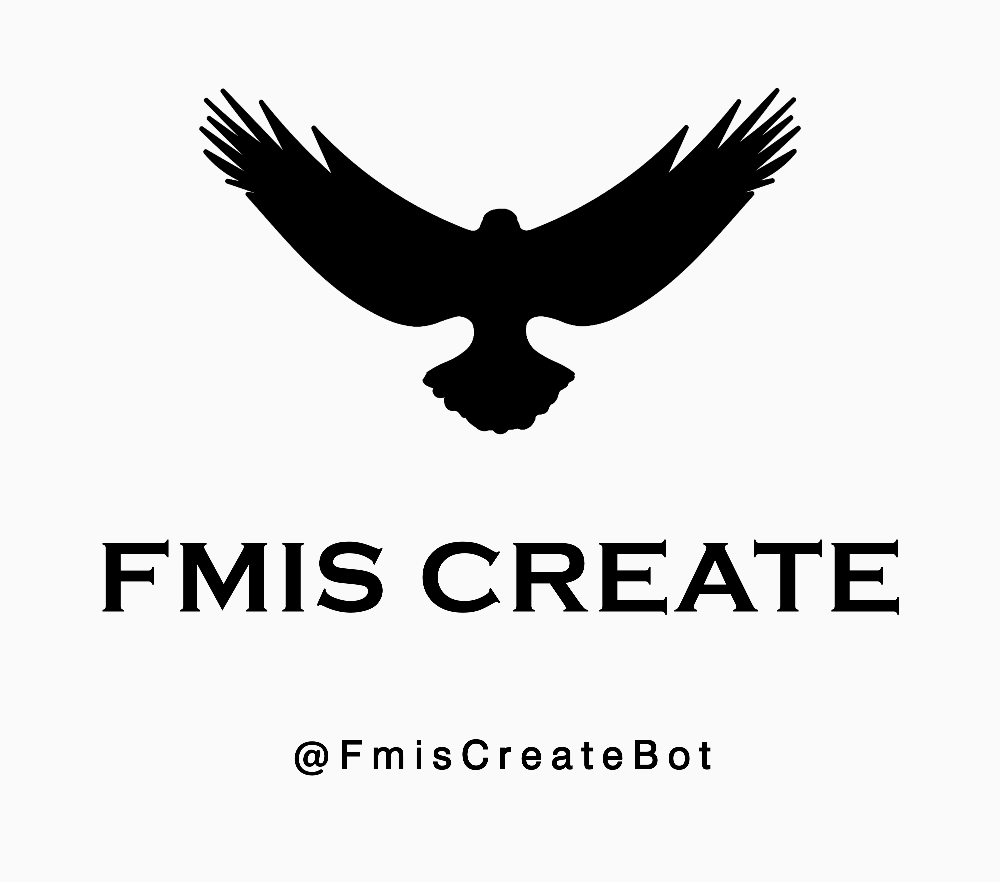

اِف اِم آی اِس بات !
- به سایت اف ام آی اس بات خوش آمدید. ما در این سایت به شما توضیحاتی در مورد ربات های ما در اخیتار شما میگذاریم.
- در حال حاضر تلگرام تعداد بسیار زیادی ربات دارد که در میان آنها موارد بسیار کاربردی و جالبی میتوان پیدا کرد.
ربات نجوا :

- اف ام آی اس بات یکی از این ربات های جالب است که توسط آن میتوانید پیامهای خود را به شکل مخفی و پوشیده شده برای دوستانتان ارسال کنید. برای درک بهتر منظور ما از حالت «مخفی و پوشیده شده» میتوانید وارد ربات شوید و نگاهی به امکانات مختلف آن و پیشرفته بودن قسمت نجوا بی اندازید.
دانلودر یوتیوب :

- با استفاده از این ربات میتوانید ویدیو هایی که از یوتیوب میبینید بصورت صوت یا ویدیو دانلود کنید و برای خود ذخیره داشته باشید.
ربات بازی :

- ربات بازی ما بصورتی است که شما میتوانید خود و دیگران را به چالش بکشید و بصورت گروهی بازی کنید که حتی به دو صورت تستی و انجام بازی قرار گرفته است که بیخود امتیازتان کم نشود و قبل از انجام بازی ، بازی مورد نظر خود را پیدا کنید.
رباتساز :
- رسیدیم به جالب ترین ربات مجموعه ما که شما با استفاده از این ربات میتوانید ربات های «نجوا ، مدیریت گروه و پیام رسان» بسازید.
- نا گفته نماند که شما خیلی راحت میتوانید ربات خود را شخصی سازیش کنید و همچنین قیمت ها در رباتساز مشخص شده است و برای اعتماد حتی قسمت دمو ساخته شده است.